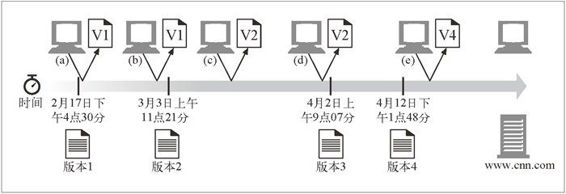

15.7 随时间变化的实例
网站对象并不是静态的。同样的 URL 会随着时间变化而指向对象的不同版本。以 CNN 的主页为例，同一天里多次访问 http://www.cnn.com，可能每次得到的返回页面都会略有不同。
可以把 CNN 的主页当作一个对象来考虑，其不同版本就可以看作这个对象的不同实例（参见图 15-8）。在图中，客户端多次请求同一个资源（URL），但得到的是该资源的不同实例，因为它是随时间而变化的。在时间（a）和时间（b）具有相同的实例，而在时间（c）则是不同的实例。

图 15-8 实例是资源在某个时间的“快照”
HTTP 协议规定了称为实例操控（instance manipulations）的一系列请求和响应操作，用以操控对象的实例。两个主要的实例操控方法是范围请求和差异编码。这两种方法都要求客户端能够标识它所拥有（如果有的话）的资源的特定副本，并在一定的条件下请求新的实例。本章后面将讨论这些机制。